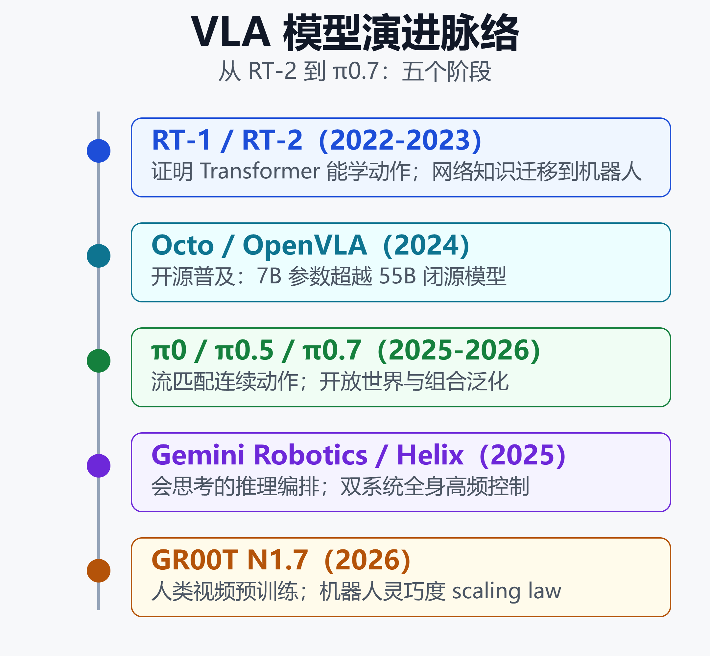
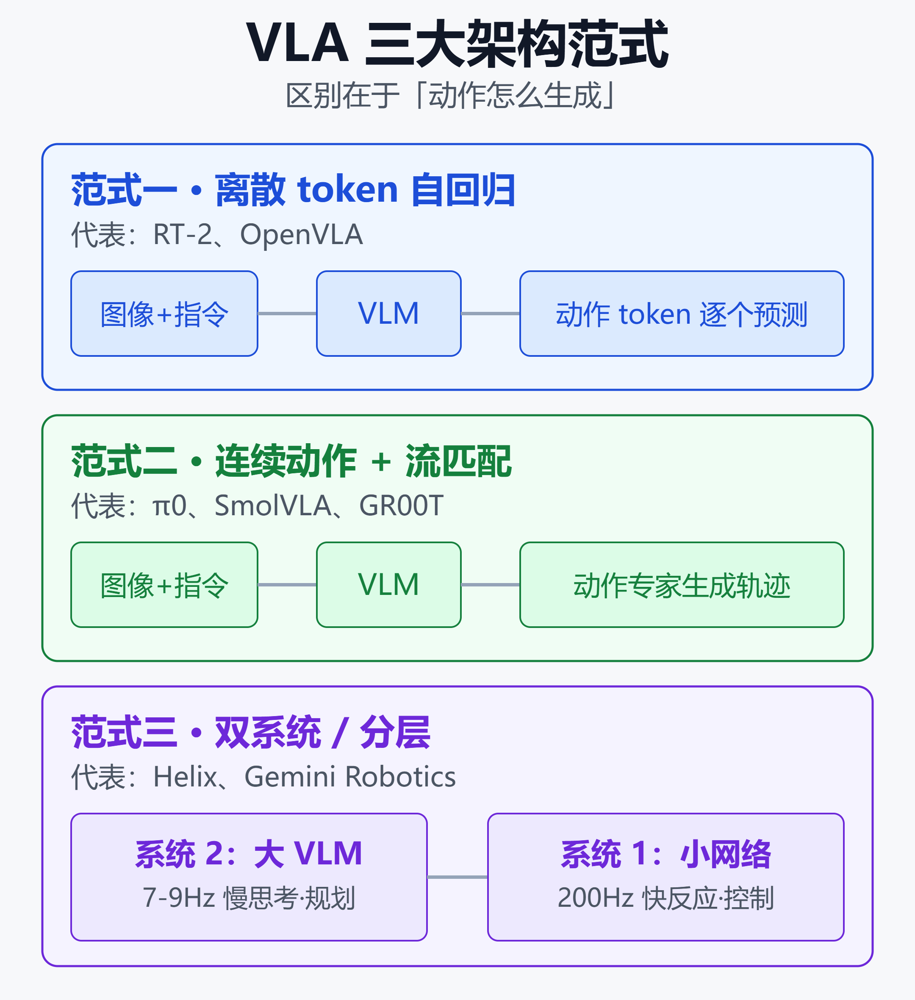
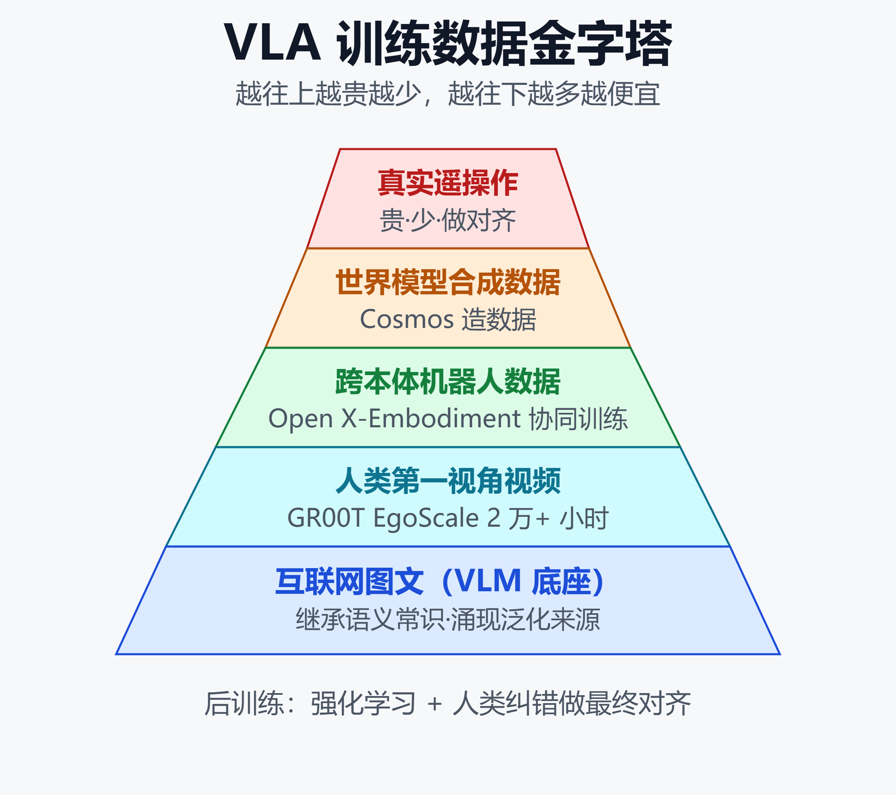

VLA 模型深度调研：主流架构、训练范式与产业落地（2026）
序言：一个模型，直接开机器人
2025 年 2 月 20 日，Figure AI 放出一段演示：两台人形机器人面对一堆从没见过的杂物，只听一句自然语言指令，就开始互相配合把东西归位。背后是一个叫 Helix 的模型——它把摄像头画面和你说的话，直接变成 35 个关节的连续动作，控制频率高达 200Hz。
这不是遥控，也不是预编程脚本。它是一类正在重塑机器人产业的基础模型：VLA（Vision-Language-Action，视觉-语言-动作模型）。
一个数字能说明这条赛道有多热：NVIDIA 在 2026 年 4 月的 GR00T N1.7 里，宣称找到了「机器人灵巧度的第一个 scaling law」——把人类第一视角训练视频从 1000 小时加到 20000 小时，平均任务完成度翻了一倍多。与此同时，中国厂商智元在 2026 年 3 月下线了第 1 万台机器人，银河通用拿到 25 亿元融资，行业普遍把 2026 称作具身智能的「量产元年」。
VLA 到底是什么、有哪几种造法、怎么训出来、又落到了哪些场景？这篇文章把过去 18 个月的关键进展梳理成一张地图。
一、VLA 到底是什么
传统机器人做一件事，通常要拆成三段独立工程：感知（识别物体）、规划（算路径）、控制（发指令）。每一段单独调，换个任务、换个物体、换台机器就得重来。
VLA 的核心思路，是把动作当成和视觉、语言并列的一种「模态」，塞进同一个基础模型里一起学。模型直接吃摄像头图像加自然语言指令，吐出机器人的电机指令。用一句话概括就是：看懂画面、听懂人话、动手做事，全在一个网络里完成。
这么做的好处是泛化。因为模型底座往往继承自在互联网海量图文上预训练过的视觉语言模型（VLM），它天生「见过世面」——知道苹果是能吃的、垃圾是要丢的。当这种语义知识被迁移到动作生成上，机器人第一次能对训练数据里根本没出现过的物体和指令做出合理反应。

上图是 VLA 的演进主线：从证明「Transformer 能学动作」，到「网络知识能迁移到机器人」，再到开源普及、连续动作与双系统架构。下面按这条脉络展开。
二、发展脉络：从 RT-2 到 π0.7
奠基：RT-1 与 RT-2
VLA 的起点是 Google DeepMind。RT-1（2022）把机器人操作数据当作序列来建模，证明 Transformer 可以直接学习「从画面到动作」。真正的转折点是 RT-2（2023）：它把在网络图文上训练的视觉语言模型知识迁移到机器人控制，让机器人出现了「识别桌上的垃圾并丢进垃圾桶」这类训练里从没教过的涌现技能。
紧接着的 RT-1-X / Open X-Embodiment（2023）把多家实验室、多种机器人的数据汇到一起，跨本体训练让平均成功率提升约 50%，奠定了「数据要跨机器人共享」的行业共识。
开源普及：Octo 与 OpenVLA
Octo（UC Berkeley，2024）是早期开源通用策略的代表，分 Small（27M）和 Base（93M）两个尺寸，用 Transformer 骨干加扩散解码，基于 80 万条 Open X-Embodiment 轨迹预训练，能用约 100 条目标场景演示快速适配新机器人。
OpenVLA（2024）把开源推向主流：7B 参数，用 Llama 2 语言模型加 DINOv2、SigLIP 双视觉编码器，训练在 97 万条真实机器人演示上。它的成绩很有说服力——参数比闭源的 RT-2-X（55B）少 7 倍，任务成功率反而高出 16.5 个百分点。2025 年推出的 OFT 微调方案又把推理速度提升 25 到 50 倍，在 LIBERO 仿真基准上拿到 97.1% 的成功率。
连续动作时代：π 系列
Physical Intelligence 的 π 系列把架构往前推了一大步。π0（2025 年初开源）在预训练 VLM 之上接了一个流匹配（flow matching）动作头，不再输出离散 token，而是生成平滑连续的关节轨迹，频率高达 50Hz——这是「能把东西拿起来」和「能把衣服叠好」之间的差别。π0 总参数 3.3B，预训练用了 1 万小时以上、跨 7 个平台的机器人数据。
后续 π0.5（2025 年 4 月）不追求更强的灵巧度，而是主攻开放世界泛化：靠跨异构任务、多机器人、网络数据协同训练，让机器人去打扫训练里没见过的厨房和卧室。其升级用到 RECAP 方法（演示 + 纠错 + 自主经验的强化学习），报告称在装咖啡滤纸、叠陌生衣物等任务上吞吐翻倍。π0.7（2026 年 4 月）则是研究阶段成果，重点是组合泛化——把不同场景里学到的技能拼起来解决没专门训练过的新任务。
会思考与全身控制：Gemini Robotics 与 Helix
Gemini Robotics 1.5（Google DeepMind，2025）基于 Gemini 2.0，把物理动作加成一个新的输出模态，并配套一个「会思考」的具身推理模型 ER，能在动作之间穿插自然语言推理、甚至调用 Google 搜索等工具来做规划；它还引入 Motion Transfer 机制，从多种本体的异构数据里学习。
Figure Helix（2025）则代表全身高频控制的方向：它是首个能高频连续控制人形上半身（含躯干、头、手腕、每根手指共 35 个自由度）的 VLA，全部计算跑在机器人自带的低功耗 GPU 上。
到这里，三条清晰的架构路线已经浮现。下一节详细拆。
三、三大架构范式
当前 VLA 的技术路线，基本收敛到三种模式。理解它们的取舍，是看懂这个领域的关键。

上图并列了三种范式的数据流。核心区别在于「动作怎么生成」，下面逐一说明。
范式一：离散 token 自回归
代表是 RT-2 和 OpenVLA。做法是把连续的机器人动作离散化成一个个 token，然后像语言模型写句子一样，从左到右逐个预测。
- 优点：结构简单，能直接复用成熟的 LLM 训练与推理栈，容易扩展。
- 缺点：推理慢（逐 token 生成），长程任务里早期 token 的错误会累积放大；标准离散化在高频灵巧任务上容易失效。
- 改进：FAST 提出频域动作 tokenizer，用离散余弦变换压缩动作序列，让自回归 VLA 也能处理高频灵巧动作。
范式二：连续动作 + 流匹配/扩散头
代表是 π0、SmolVLA、GR00T。做法是在 VLM 骨干外挂一个动作专家，用流匹配或扩散的方式一次性生成一段连续动作轨迹，而不是逐 token 蹦。
- 优点：输出平滑连续，天然适合叠衣服、插滤纸这类需要精细力控的灵巧任务；可并行生成整段动作，延迟更可控。
- 缺点：训练需要专门的流匹配/扩散目标，工程更复杂；采样步数影响速度。
- 说明：HuggingFace 的 SmolVLA（450M）用的就是这套——SmolVLM-2 骨干加流匹配 Transformer 动作专家，能在单张消费级显卡甚至 MacBook 上跑。
范式三：双系统 / 分层
代表是 Figure Helix、Gemini Robotics、开源的 OpenHelix。灵感来自认知科学的「系统 1 / 系统 2」：慢系统负责想，快系统负责动。
以 Helix 为例：
- 系统 2 是一个 7B 的互联网预训练 VLM，以 7 到 9Hz 运行，负责场景理解和语言理解，回答「要做什么」。
- 系统 1 是一个 80M 的交叉注意力编码-解码 Transformer，以 200Hz 运行，把系统 2 的语义表示翻译成精确的连续动作，回答「手该怎么动」。
这种分层的好处是：大模型的慢思考不拖累高频控制的实时性，两者各跑各的频率。它也最贴近上一篇文章讨论的机器人「大脑-小脑」分层范式（详见 端到端 VLA vs 传统 ROS：2026 人形机器人操作系统的两条技术路线之争）。
前沿探索
三大范式之外，学界还在探索融合与改良：离散流匹配（DFM-VLA，可迭代修正已生成的动作 token）、块扩散微调（给自回归 VLA 加速）、隐式动作建模（ViLLA / villa-X，用潜在动作作为视觉语言到真实动作之间的中间抽象），以及统一扩散与自回归的框架。方向都是同一个目标：既要 LLM 那样的推理能力，又要连续动作那样的平滑与实时。
四、训练范式：数据从哪来
VLA 最大的瓶颈从来不是模型，而是数据。机器人真实操作数据既贵又稀缺，一条高质量遥操作轨迹的采集成本远高于一句网络文本。业界因此发展出一套层层递进的训练策略。

如上图，数据来源呈金字塔状——越往上越贵越少，越往下越多越便宜。训练策略的本质，就是尽量把便宜数据的价值榨干，再用昂贵数据做最后对齐。
策略一：站在 VLM 肩膀上
几乎所有主流 VLA 都不从零训练，而是拿一个在互联网图文上预训练好的 VLM 当底座，继承它的语义常识。这是「涌现泛化」的根本来源。
策略二：跨本体协同训练
把多种机器人、多种任务的数据混在一起训练（co-training），再掺入网络数据。Open X-Embodiment 是最早的大规模尝试，Gemini Robotics 的 Motion Transfer 则是把这一思路做成了显式机制，让模型能在异构本体间迁移动作知识。
策略三：人类第一视角视频预训练
真实机器人数据不够，就用人类的第一人称视频补。NVIDIA GR00T N1.7 的 EgoScale 用了超过 2 万小时、覆盖 20 多类任务的人类第一视角视频做预训练；N1.5 的 FLARE 训练目标也支持从人类 ego 视频学习。这是「机器人灵巧度 scaling law」的数据基础。
策略四：世界模型造数据
既然真实数据贵，那就用生成模型「造」。NVIDIA Cosmos 世界模型配合 GR00T-Dreams，能从单张图片加一句指令生成大量合成操作轨迹，把原本需要数月的数据生产压缩到约 36 小时，直接支撑了 GR00T N1.5 的训练。
策略五：后训练与强化学习
预训练之后，用强化学习和人类纠错做对齐。π0.5 的 RECAP 把「演示 + 教练式纠错 + 自主经验」结合起来，报告称让部分任务吞吐翻倍。指令微调路线（如 InstructVLA 的 VLA-IT）则用专门构造的指令数据，联合优化推理和动作生成。
策略六：高效微调与部署
面向落地，LoRA、量化等技术让 7B 级模型能在资源受限的硬件上微调和运行；Gemini Robotics On-Device 甚至能用少到 50 至 100 条演示适配一个新任务，并做到断网本地推理。
下面这张表汇总了主流模型的关键参数，方便横向对照。
| 模型 | 参数量 | 动作范式 |
|---|---|---|
| OpenVLA | 7B | 离散 token |
| Octo | 27M/93M | 扩散解码 |
| π0 | 3.3B | 流匹配 |
| Helix | 7B+80M | 双系统 |
| GR00T N1.7 | 3B | 双系统 DiT |
| SmolVLA | 450M | 流匹配 |
（更侧重开源可用性的对比，可参考 2026 开源大模型选型指南：主流模型能力横评与落地建议。）
五、产业落地：从展台到车间
2026 年被反复称为具身智能的「量产元年」「部署元年」，标志是 VLA 驱动的机器人开始从演示走进真实生产。
应用形态
VLA 覆盖的机器人形态正在变宽：
- 单臂/双臂机械臂：抓取、分拣、装配。
- 移动操作机器人：边走边操作。
- 人形机器人：全身控制，Helix 是上半身高频控制的代表。
- 无人机：也有 VLA 研究把「飞到红色建筑」这类指令直接映射成飞行动作。
典型场景
落地场景集中在几个方向：
- 工厂与柔性产线：2026 年多方宣布进入量产，人机混流作业成为新课题。
- 物流分拣：Figure 演示过人形机器人做包裹分拣与三角化处理。
- 家庭服务：π0.5 主打的就是清扫陌生家庭环境。
玩家格局
国外阵营技术领先、路线各异：
- Physical Intelligence：π 系列，流匹配路线的旗手。
- Figure AI：Helix，全身高频控制。
- Google DeepMind：Gemini Robotics，会思考 + 工具调用。
- NVIDIA：Isaac GR00T + Cosmos，开源基座 + 世界模型造数据。
- UC Berkeley、HuggingFace：Octo、SmolVLA，把 VLA 做进消费级硬件。
国内阵营则在商业化落地上狂奔：
- 智元（AgiBot）：BFM/GCFM 双基座模型，GO-1 用隐式动作路线，2026 年 3 月下线第 1 万台。
- 银河通用：GraspVLA，获 25 亿元融资。
- 星海图：G0 通用具身基座，G0.5 用单一自回归流统一推理与动作。
2026 年国内产业进入商业化拐点，但也伴随争议——有企业 CEO 公开质疑部分公司「拼凑上市」，指出上市热度与真实盈利之间存在明显落差。这提醒我们，量产元年既是技术拐点，也是泡沫与现实的分水岭。
六、局限与挑战
VLA 光环之下，硬骨头依然不少：
- 推理延迟：自回归范式逐 token 生成慢，高频控制场景吃紧，这也是双系统和并行解码流行的原因。
- 长程误差累积：一步错、步步错，长时序任务的稳定性仍是难题。
- Sim-to-Real 落差：仿真里跑得好，真实车间里保真度和鲁棒性会打折。
- 能耗与效率：有研究指出，在结构化长程操作任务上，神经符号方法的成功率反而更高、能耗显著更低——VLA 并非在所有场景都最优。
- 评测稀缺：真实世界的系统性评测和跨模型公平对比仍然很少，基准与现实的差距需要警惕。
换句话说，VLA 是一条极有前景的主线，但远没到「一个模型解决一切」的地步。它更可能与传统控制、神经符号方法长期共存、各取所长。
小结
VLA 把视觉、语言、动作统一进一个基础模型，让机器人第一次具备了「看懂-听懂-动手」的通用潜力。技术上，它从 RT-2 的知识迁移起步，经过 Octo、OpenVLA 的开源普及，走到 π 系列的连续流匹配和 Helix 的双系统高频控制，形成了自回归、流匹配、双系统三大范式。训练上，靠 VLM 底座、跨本体协同、人类视频与世界模型造数据、强化学习后训练层层解决数据瓶颈。落地上，2026 年跨入量产元年，中美玩家各有侧重，但延迟、误差累积、Sim-to-Real、能耗与评测仍是待解的硬问题。
对关注这条赛道的人来说，接下来值得盯的三个信号是：数据 scaling law 还能撑多久、双系统会不会成为事实标准、以及量产落地能否跑通商业闭环。
免责声明
本文基于公开资料整理，仅代表个人研究与观点，不构成任何投资建议或产品推荐。文中涉及的模型参数、发布时间、融资与落地数据均来自公开来源，可能随产品迭代而变化，请以各机构官方信息为准。
参考来源
- arXiv —— Vision-Language-Action Models for Robotics: A Review Towards Real-World Applications
- arXiv —— Large VLM-based Vision-Language-Action Models for Robotic Manipulation
- Marktechpost —— Top 10 Physical AI Models Powering Real-World Robots in 2026
- Figure AI —— Helix: A Vision-Language-Action Model for Generalist Humanoid Control
- Google DeepMind —— Gemini Robotics 1.5 brings AI agents into the physical world
- arXiv —— Gemini Robotics 1.5: Advanced Embodied Reasoning, Thinking, and Motion Transfer
- arXiv —— OpenVLA: An Open-Source Vision-Language-Action Model
- arXiv —— FAST: Efficient Action Tokenization for Vision-Language-Action Models
- Google Blog —— What is RT-2? Google DeepMind's vision-language-action model for robotics
- GitHub —— microsoft/villa-x: Enhancing Latent Action Modeling in Vision-Language-Action Models
- HuggingFace Blog —— SmolVLA: A compact Vision-Language-Action model
延伸阅读
- 端到端 VLA vs 传统 ROS：2026 人形机器人操作系统的两条技术路线之争
- 物理 AI、世界模型与人形机器人：2026 具身智能全景
- 人形机器人 2026：中美投资与产业格局对比
- 世界模型 2026 全景：技术路线与产业版图
推荐搭配装备
善其事，利其器。以下硬件能最大化你的AI体验👇
🔗 通过以上链接购买可支持本站持续运营 🙏